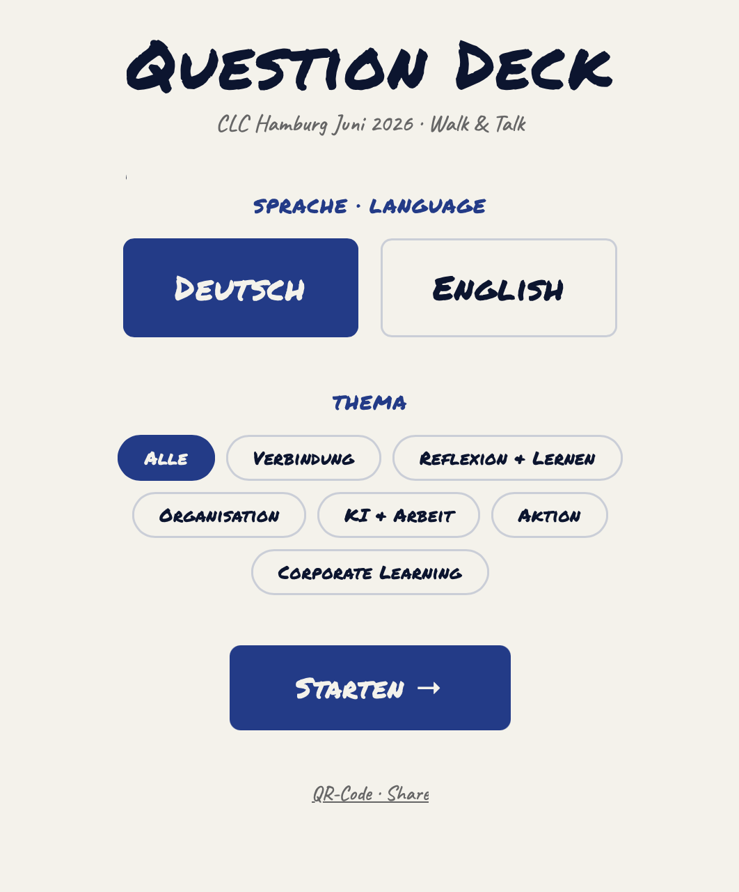
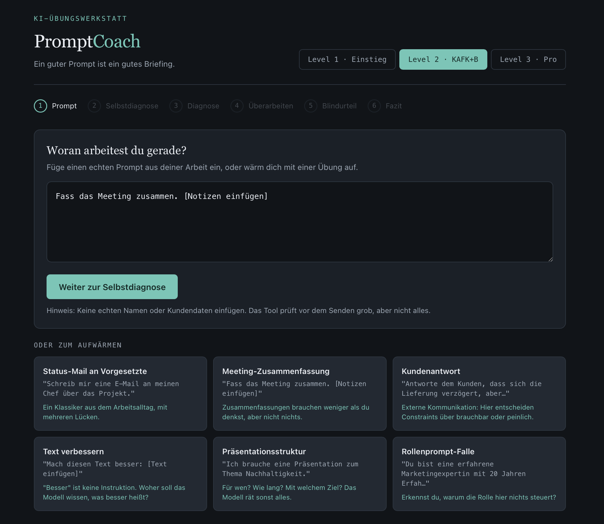
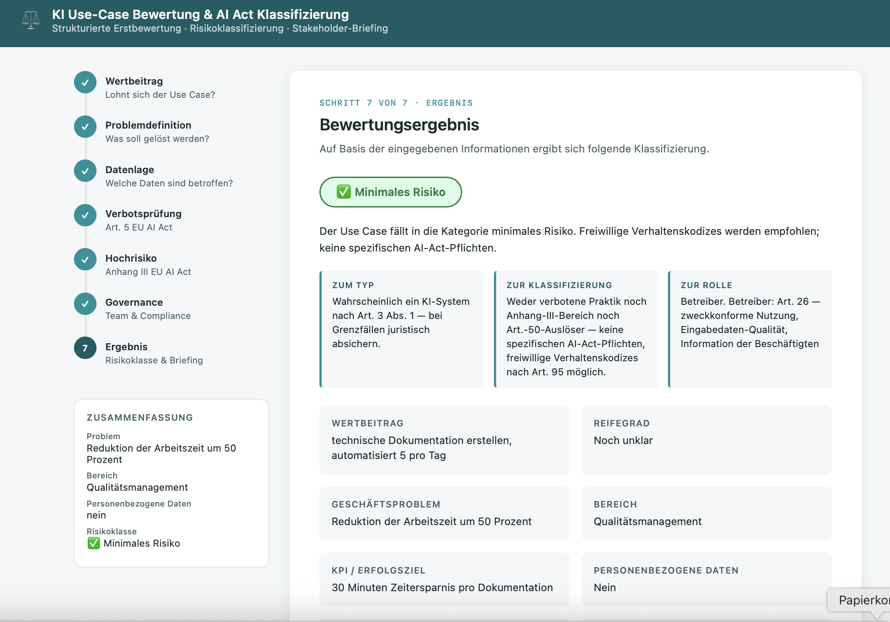

Question Deck
Fragenkarten für Gesprächseinstiege, gebaut für die Corporate Learning Community Hamburg. Die Idee dahinter: Gruppen arbeiten besser, wenn sie erst miteinander reden. Verbindung kommt vor Inhalt.
Ich baue Lernprogramme, mit denen Teams KI im Alltag nutzen. Mit Methode statt Hype.
Yvonne Pöppelbaum
Learning Design for AI Adoption
Wer sie nutzen will, muss sie sauber steuern. Deshalb beginnt meine Arbeit vor den Tools: bei den Aufgaben, die Dein Team tatsächlich hat. Was KI kann, gehört ins Training. Was sie nicht kann, genauso. Das Urteil bleibt beim Menschen.
Halbtags bis mehrtägig: Dein Team lernt an eigenen Aufgaben, wie es KI steuert und Ergebnisse prüft. Am Ende hat es erprobte Arbeitsweisen für den eigenen Alltag.
Mehrmonatige Blended-Learning-Programme: Webinare, Aufgaben zwischen den Terminen, Live-Sessions. Ich baue den Bogen von der Bedarfsanalyse bis zur Auswertung.
Workshops, Klausuren, Community-Formate. Ich gestalte den Raum so, dass Gruppen mit unterschiedlichem Vorwissen ins Arbeiten kommen.
Meine Referenzpunkte kommen aus Redaktionen: Faktendruck, Zeitdruck, gesunde KI-Skepsis. Teams in Logistik, Bildung und Verwaltung kennen alle drei. Die Methode überträgt sich.
Zwischen den Schritten urteilt ein Mensch.
Wer KI sofort produzieren lässt, bekommt plausiblen Text mit Lücken. Deshalb arbeite ich in vier Schritten: erst analysieren, dann prüfen und entscheiden, dann produzieren, dann gegen Kriterien testen. Diese Sequenz steckt in jedem meiner Trainings. Und in dieser Website: Sie entstand genau so.
Ich baue kleine Werkzeuge, die je eine Lernidee tragen. Klick rein.

Fragenkarten für Gesprächseinstiege, gebaut für die Corporate Learning Community Hamburg. Die Idee dahinter: Gruppen arbeiten besser, wenn sie erst miteinander reden. Verbindung kommt vor Inhalt.

Eine Übungswerkstatt für Prompts. Ich gebe einen Prompt ein, das Tool zeigt Lücken nach einem festen Raster, ich arbeite sie nach. Am Schluss vergleiche ich beide Ergebnisse blind und entscheide selbst, welches besser funktioniert.
→ Ausprobieren Ruft Claude live auf. Du meldest dich kurz an, um es zu nutzen.

Ich beschreibe ein KI-Vorhaben in sieben Schritten, das Tool ordnet es in die Risikoklassen des EU AI Act ein und macht daraus ein Briefing für Stakeholder. Die Idee dahinter: erst einordnen, dann bauen. Das Urteil bleibt beim Menschen.
17 Teilnehmer:innen, fünf Monate, ein Ziel: KI in die eigene Arbeit holen. Journalist:innen, Redakteur:innen und Stiftungsleute mit sehr unterschiedlichem Tech-Hintergrund. Die Gruppe war klein genug, dass niemand sich versteckt.
Der Aufbau: Webinar-Serie, Aufgaben zum Selbstlernen, Live-Sessions. Ich habe das Programm bei tactile.news konzipiert und durchgeführt, von der Bedarfsanalyse bis zur letzten Session.
Workshops habe ich außerdem für den WDR, die dpa, die Funke Mediengruppe und die FES Medienakademie gegeben.
Ich komme aus dem Journalismus: über zehn Jahre Medienbranche, davon siebeneinhalb Jahre Geschäftsführung bei Freischreiber, dem Berufsverband von rund 900 freien Journalist:innen. Recherchieren, prüfen, verständlich machen: Dieses Handwerk nehme ich in jedes Training mit. Seit 2023 entwerfe ich Lernprogramme für KI-Adoption. Heute verbinde ich beides als Learning Architect in Hamburg.
Schreib mir, woran Dein Team gerade arbeitet. Ich antworte mit einem konkreten Vorschlag.
yvonne@poeppelbaum.eu